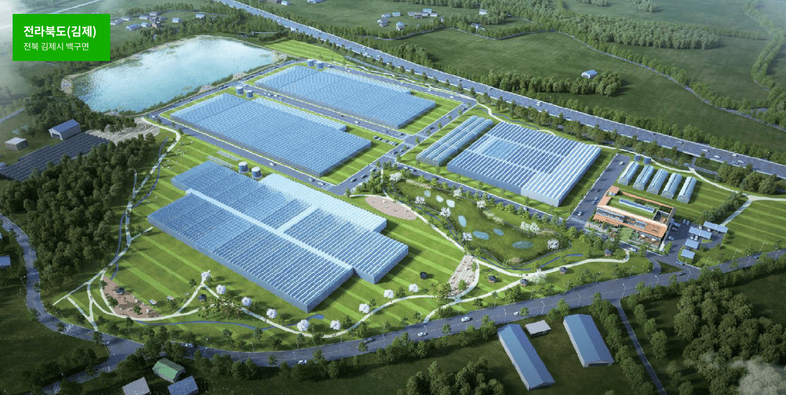
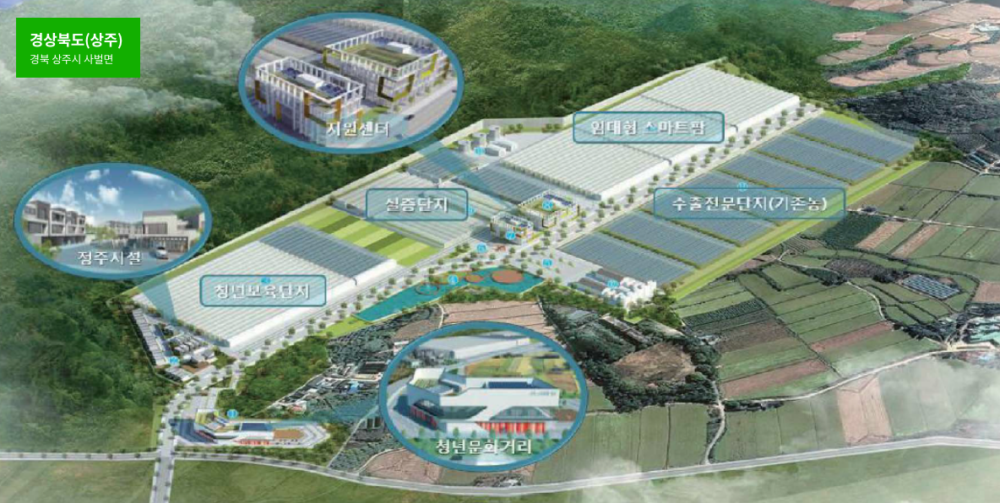
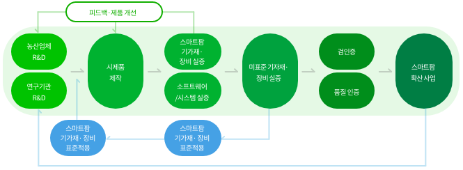

실증서비스 유형
자율형
의뢰인이 부지, 온실, 장비 등을 임대하여 자체적으로 실증 추진 별도 요청 시, 스마트팜 혁신밸리 실증단지에서 자율실증을 하였다는 실증확인서(농업기술실용화재단) 발급
부지, 온실, 장비 임대 가능. 이용에 따른 별도 비용을 부과
위탁형
의뢰인이 제품의 성능, 품질, 내구성, 호환성 등 R&D결과물에 대한
실증 요청 시, 일련의 절차를 거쳐 실증결과서(농업기술실용화재단) 까지 발급
실증 요청 시, 일련의 절차를 거쳐 실증결과서(농업기술실용화재단) 까지 발급
부지, 온실, 장비 임대 불가능
실증 방법 및 기간
| 구분 | 내용 | 소요 기간(참고) |
|---|---|---|
| 단일제품 성능실증 | 단일제품에 대한 내구성, 정밀도, 안정성 등 테스트·분석 | 약 30일 |
| 비교 실증 | 대조군 대비 실험군의 실증 결과를 비교하여 결과 도출‧분석 | 6개월 or 1년 단위 |
| 비교 실증 | 동일한 조건의 테스트 절차에 따라 3회 이상의 실증을 추진한 후 결과를 도출·분석 | 6개월 or 1년 단위 |
- 실증 분야에 따른 세부 실증 매뉴얼 및 소요기간 개발‧검증 추진 中
- 제품 및 성능 등 실증요구사항에 따라 소요기간은 유동적일 수 있음
지역별 특화분야

주요특징
· 스마트팜 ICT기자재 실증
· 신품종, 약용작물, 기능성물질 실증 및 효과 분석

주요특징
· 농업용로봇, 수출 플랜트 거점화
· 병해충 및 방제관련 실증
실증서비스 분야
| 대분류 | 중분류 | 실증항목 |
|---|---|---|
| 스마트팜 | 센서, 구동기 | - 센서의 정확도, 고장율, 호환성 실증 - 구동기의 작동성능, 고장률, 호환성 실증 |
| 온실 구조자재 | 구조자재, 피복재 | - 내환경성 및 내구성 실증 - 보온·차광 효율성 실증 |
| 농업용 로봇 | 방제, 정식, 운송, 수확 등 | - 주행정확도, 속도, 자율주행 성능 실증 - 로봇의 내환경성, 내구성, 안전성능 실증 |
| 병해충 | 진단, 방제 | - 진단·예찰 제품의 정확도 실증 - 병해 절감 효과 실증 |
| 수출플랜트 | 국가별 | - 국가별 환경에 맞는 내구성, 재배실증 |
| 병해충 | 진단, 방제 | - 센서 및 구동기와의 호환성, 정확성 실증 - 내구성, 안전성능 실증 및 재배실증 - 양액의 효과, 공급량, 폐액 재활용 비율 실증 - 인공광원의 효율성, 재배 실증 |
| 육모 | 파종, 접목 등 | - 파종 성공률, 작업속도, 관수성능, 접목 성공률 등 |
| 생육모델 | 신품종, 기능성 | - 작물 재배실증, 물질 분석, 생산성 향상 실증 등 |
| 에너지 절감 | 신재생, 냉난방, 절감기자재 | - 온실 에너지 최적화 실증 - 에너지 절감 기자재 효율성 실증 |
연계 지원방안
R&D, 표준화, 검정서비스, 분석, 사업화 등 연계 추진

 상담 신청바로가기
상담 신청바로가기